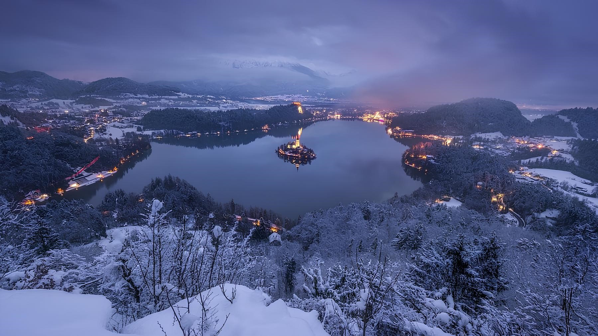

Lago de Bled, Eslovênia

O Lago de Bled, é um lago nos Alpes Julianos da região da Alta Carniola, noroeste da Eslovénia, onde confina a cidade de Bled. A área é um dos principais destinos turísticos da Eslovénia. O lago fica a de 35km do Aeroporto Internacional de Liubliana e 55km da capital, Liubliana.
O lago possui origens glacial e tectônica. Com 2120m de comprimento e 1380m de largura, possui uma profundidade máxima de 29,5m e tem uma pequena ilha (Ilha de Bled). O lago está situado em um ambiente pitoresco, rodeado por montanhas e florestas. O Castelo medieval de Bled está localizado acima do lago da costa norte. O Vale Zaka fica no extremo oeste do lago.
A ilha tem vários edifícios, sendo o principal deles a igreja de peregrinação dedicado à Assunção de Maria (Cerkev Marijinega vnebovzetja), construído em sua forma atual, perto do final do século XVII e decorados com restos de afrescos góticos de cerca de 1470. A igreja tem uma torre com 52m e há uma escadaria Barroca de 1655 com 99 degraus de pedra que levam a um edifício.
O Monte Fuji localiza-se num ponto de encontro da placa Euroasiática a Placa de Okhotsk e da Placa das Filipinas, sendo estas placas que formam, as partes ocidental e oriental do Japão e a península de Izu, respetivamente.
Fonte: Wikipédia
Compartilhe nas Redes Sociais


Escrito por: PRANTEI - Blog de Viagens
Publicado em 26/03/2025
Localização no Mapa
Avaliações
Usuários que visitaram e opinaram sobre o local
Usuário
"O Lago de Bled é um lugar incrível, com uma vista maravilhosa. Vale muito a pena conhecer."
Usuário
"A Eslovênia é um país incrível, e o Lago de Bled é um dos lugares mais bonitos que já visitei. Recomendo a todos
Usuário
"O Lago de Bled é um lugar incrível, com uma vista maravilhosa. Vale muito a pena conhecer."